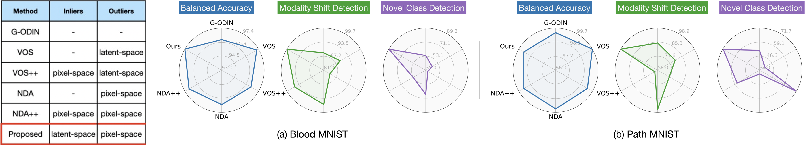

Our calibration protocol consistently outperforms all baselines (G-ODIN, VOS, VOS++, NDA, NDA++) by significant margins (10% to 30% on average for Modality Shift Detection and 15% to 28% for Novel Class Detection ) in terms of AUROC scores without compromising on the ID accuracy.